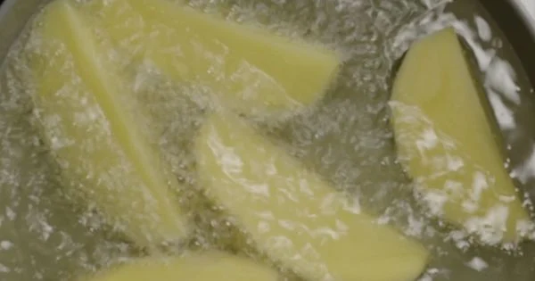
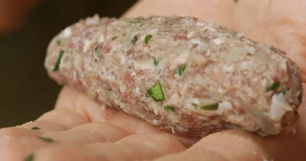
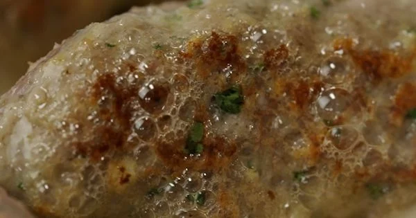
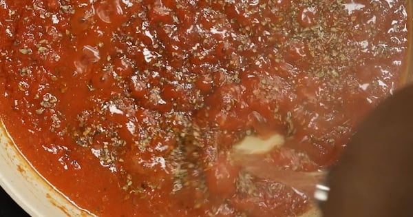
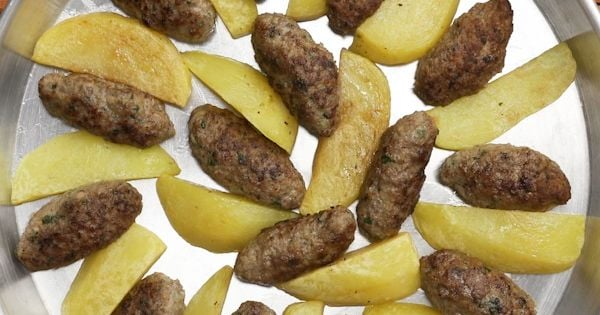

LEZİZ TARİFLERDEN MERHABA
Ana Sayfa
Hakkımda
Anayemek
Makarna
tatlı
İZMİR KÖFTE:
| KAÇ KİŞİLİK |
HAZIRLANMA SÜRESİ |
PİŞİRME SÜRESİ |
| 2 Kişilik |
30 Dakika |
45 Dakika |
İzmir Köfte Tarifi İçin Malzemeler:
- 500
gram
dana kıyma
(köftelik)
- 1
adet
kuru soğan
- 1
diş
sarımsak
- 1/2
adet
bayat ekmek içi
- 1/2
çay bardağı
maden suyu
- 1
adet
yumurta
- 1/4
adet
maydanoz
(sadece yaprakları)
- 1,5
çay kaşığı
tuz
- 1
tutam
kimyon
- 1/2
çay kaşığı
karabiber
İzmir köfteyi pişirmek için:
- 2
su bardağı
sıvı yağ
- 2
yemek kaşığı
tereyağı
İzmir köftenin diğer malzemeleri için:
- 4
adet
patates
- 4
adet
biber
- 2
adet
domates
İzmir köftenin sosu İçin:
- 1
yemek kaşığı
domates salçası
- 1
su bardağı
domates rendesi
- 1
su bardağı
sıcak su
- 1
çay kaşığı
tuz
- 1/2
çay kaşığı
karabiber
- 1
çay kaşığı
kekik
İzmir Köfte Tarifi Nasıl Yapılır?
- İzmir köfte için bayat ekmek içini maden suyu ile ıslatın, suyunu sıkın. Soğanı rendeleyip suyunu sıkın, maydanoz yapraklarını ince ince doğrayın ve sarımsağı ezin. Derin bir kasede köfte malzemelerini birleştirin, yoğurun ve buzdolabında dinlenmeye bırakın.
- Patatesleri soyun iri dilimler halinde kesin, yıkayın, kurulayın ve sadece dışları renk alana kadar sıvı yağda kızartın. Kızaran patatesleri havlu kağıt üzerine çıkartıp hafifçe tuzlayın.

- Köfte harcını dolaptan çıkartın ve ellerinizi ıslatıp ceviz büyüklüğünde parçalar kopartın, patatesler aynı boyda olacak şekilde elinizde şekil verin.

- Tavada tereyağını kızdırın ve köftelerin dışları renk alana kadar kızartın. Dışları kızaran köfteleri kenara alın.

- Aynı tavada kalan yağın içinde önce salça ve domates rendesini kavurun. Sıcak su ve baharatları ekleyip bir taşım kaynatın. Orta boy fırın tepsisini bir patates bir köfte olacak şekilde doldurun. Biberleri ve domatesleri de iri parçalar halinde boşluklara ya da aralara yerleştirdikten sonra sosu tepsideki tüm ürünlerin üstüne gelecek şekilde gezdirin.

- 200 derecelik sıcak fırında İzmir köfteyi üstü kızarana kadar yaklaşık 20 dakika pişirin.

- İzmir köfteyi sıcak olarak servis edin. Afiyet olsun.